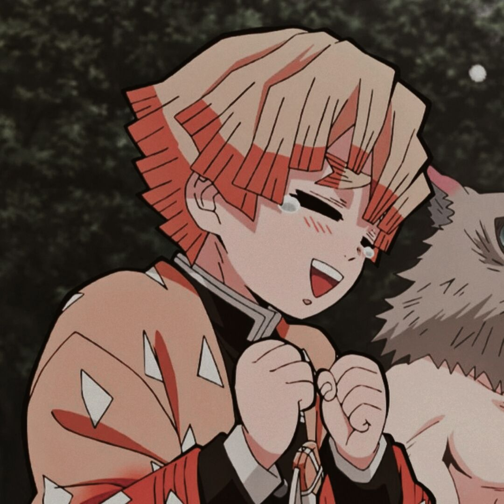
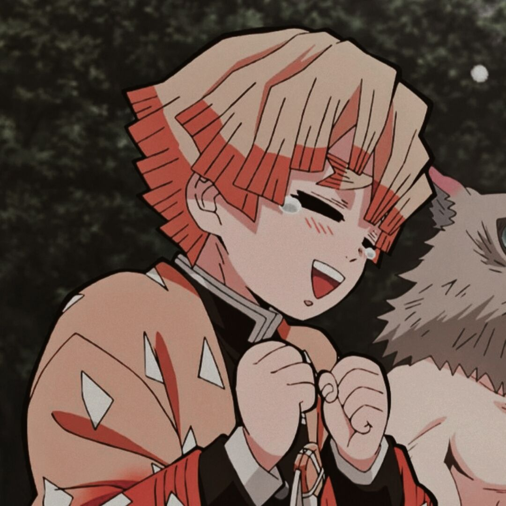

Você sabe o que é Anime?
A palavra "Anime" é a abreviação da palavra "animação" em japonês, que se refere a qualquer tipo de animação,
não apenas as japonesas.
Além dos animes, na maioria das vezes, as animações japonesas possuem tambémuma versão em mangá,
que são histórias em quadrinho japonesas.
Características dos animes
A principal característica dos mangás e dos animes são os olhos grandes e bem definidinhos. Na maioria das vezes,
eles são redondos os rasgados e sempre estão com bastante brilho e cores variadas que chamam a atenção do público
e deixam nítidos as emoções dos personagens.
Como surgiram os animes?
O anime surgiu aproximadamente na metade do século XX (século quinze).
Entre os anos de 1914 e 1917, após a chegada de quase 100 filmes de animação estrangeiros no Japão,
os animadores e produtores japoneses começaram a dar atenção e potencial aos desenhos animados, com a expectativa
de se tornar um grande negócio futuramente. E foi ai que os japoneses resolveram entrar nessa "corrida animada"
O Japão conseguiu realizar o seu primeiro filme animado em 1917: Imokawa Mukuzo Genkanban no Maki, que é
considerado o anime mais antigo do mundo.
E ai? Gostou de conhecer um pouco mais desta arte? Isso é apenas o começo! Este site está recheado de coisas sobre os
desenhinhos japoneses. Pode olhar tuuudinho!

 
